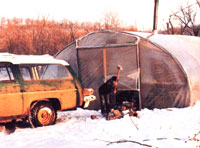

Home Sweet Greenhouse
With winter coming on and no roof over their heads, this family learned how to improvise and shares their experiences.
By Jim Franke
November/December 1982
With winter coming on and no roof over their heads this family learned how to improvise.
My wife and I are strong believers in the old saying, "Where there's a will, there's a way" . . . so once we decided that the time had come to adopt a simpler, more natural back-to-the-land lifestyle, we just plain up and did it. We quit our jobs and movedfour children and all-to 40 acres of Ozarks complete with pasture, woods, hills, and running water (a creek and a small river).
And true to our expectations, we soon found ourselves leading much more enjoyable, relaxed lives. Now I don't mean that ate worked less, mind you (in fact, quite the opposite!), but as we put the trivial concerns of our old existence behind us and focused our energies on the fundamental challenges of homesteading-such as putting a roof over our heads-our lives became simpler. We learned to be patient, to be flexible in our thinking . . . and to approach problems creatively.
Therefore, when the construction of our earth-sheltered house was delayed (leaving us unable to do more than complete the initial excavation before winter hit), we weren't particularly discouraged ... we simply borrowed a tent and determined to live in that for a while. However, as the season grew colder (and the creek-our bath-tub-became icier), we recognized the need for a warmer and more substantial temporary home.
And our solution to the problem was, I must admit, anything but conventional: We bought and erected a 20' X 45' Quonset-style greenhouse covered with a double layer of polyethylene! Since I had built and worked in such structures for several years, I knew that the makeshift home would be sufficiently roomy, fairly easy to erect, sturdy enough to withstand our area's weather, and relatively inexpensive. [EDITOR'S NOTE: Prices for models of similar size and design vary widely . . . from about $1,000 up.] Furthermore, my wife and I figured that if all of us could survive living together in a tent, we'd do just fine in our more spacious "plastic house".
Well, as time has gone by, we've become convinced that we made the right decision. In fact, we've lived in our greenhouse for more than a year now, and it has unfailingly provided us with warm, dry shelter. We have 900 square feet of living, storage, and work space all in one long room . . . and because we've simply used our furniture to separate the various areas (the bedrooms, kitchen, etc.), we've been able to avoid the uncomfortable cramped corners or heat traps that walls sometimes create.
Several skeptics told me-when I first revealed my idea to them-that we'd freeze if we tried to spend a winter in an uninsulated greenhouse. Actually, however, the warm shining sun-in conjunction with our cookstove and homebuilt woodstove (based on a design featured in an article in MOTHER NO. 49)provides us with plenty of heat . . . even on the coldest of days. One February morning at 7:00 a.m., for example, the outside temperature plunged to a bonechilling 4°F . . . but our home reached a bearable low of only 48°F. And by 11:00 a.m., with the outdoor thermometer reading 18°F, our house was downright toasty at 80°F. On many winter days we've actually had to scoop the coals from our stove and take them outside in order to avoid being in-tolerably warm!
Now I'm not saying that we don't keep the old woodburner blazing when the mercury dips to 0°F-or below-after 12 hours of darkness, or during days when the sky is overcast. But we have learned to adapt to a wide variance in winter temperatures . . . and discovered, in the process, that such old-timey customs as dressing in front of the stove on frosty mornings can be fun.
We've also increased the comfort of our home by becoming adept at improvising conveniences. For example, we put together a water-heating system for our stove, and-in the wall next to the woodburner-built a "mini door" through which we can pass logs from the woodpile outside. And in the summer, when our house does occasionally get unbearably warm (even with two ventilation fans running), we've found that we can hang sheets in strategic areas on the wall to block the sun and reduce the heat gain. (On especially hot days, we simply stay outdoors until evening, when the inside temperature falls to a comfortable level.)
I realize, certainly, that living in a greenhouse-with such "primitive" arrangements as carpet-covered earth floors and translucent walls-isn't for everyone ... but this "home under glass" has proved to be the ideal solution to our family's need for temporary living quarters and, in fact, has reshaped our thinking as to what a "house" is all about. It's not a structure to impress relatives and friends or to make some contractor rich. Rather, a house should be a shelter, a congenial dwelling place where a family can live in comfort and safety and share experiences.
Of course, one of these days we'll finish our "real" earth-bermed home . . . and use our current abode for raising vegetables. But this shelter has already provided a fertile environment for growth of a different sort: It has nurtured, within our family, a heightened awareness of the natural world . . . of our role amidst the sun and stars and earth . . . and of our capacity to do for ourselves as we choose. As far as I'm concerned, no house-no matter how fancy or expensive-could ever accomplish more.
 |
 |
|